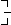
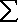
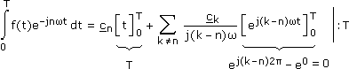
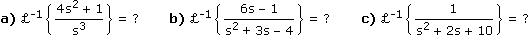

XV. REIHEN UND INTEGRALTRAFOS
 Ergänzungen und Details
Ergänzungen und DetailsCauchy-Folgen sind dadurch charakterisiert, dass sich die hinteren Folgenglieder allen nachfolgenden Gliedern beliebig nähern:
• Eine Folge (an) heißt Cauchy-Folge, wenn es zu jedem ε > 0 einen Index N gibt, sodass für alle n > N gilt: |an – aN| < ε
Gleichbedeutend damit ist, dass es eine reelle Zahl a gibt, der sich die hinteren Folgenglieder beliebig nähern:
• Eine Zahl a heißt Grenzwert der Folge (an), wenn es zu jedem ε > 0 einen Index N gibt, sodass für alle n > N gilt: |an – a| < ε
Wenn wir die Glieder einer vorgelegten Folge mit Plus verknüpfen, erhalten wir eine "Endlosrechnung", der wir erst noch einen Sinn geben müssen: Wir verstehen darunter die Folge der Teilsummen, Reihe genannt, und deren Grenzwert soll das "Ergebnis" der Endlosrechnung sein:
|
∞  n=1 |

|
(s1, s2, s3, …) mit sn = n i=1 lim sn
n—›∞ |
Aufgabe 1: Bestimme die Teilsumme sn der folgenden Reihe und die Summe der Reihe:
a) qn (= geometrische Reihe)
b)
∞
n=0
∞
n=1
1
n(n + 1)
a) sn = qi
n–1
i=0
sn = q0 +q1 + … + qn–1
snq = q1 + … + qn–1 + qn
snq = q1 + … + qn–1 + qn

(1–q)sn = 1–qn :(1–q)
sn =
1 – qn
1 – q

lim
sn = n—›∞
1
1 – q
b) sn =
n
i=1
1
i(i + 1)
Partialbruchzerlegung:
1
i(i + 1)
A
i
B
i + 1
A(i + 1) + Bi
i(i + 1)
A = 1, B = –1 lim
sn = 1n—›∞
2 Divergenzkriterium
• Eine Reihe
cn, bei der die cn nicht gegen 0 laufen, ist divergent.Beweis:
Falls die cn nicht gegen 0 laufen, gibt es ein ε > 0 und unendlich viele n mit |cn| ≥ ε. Für jedes davon ist dann sn–1 oder sn um mehr als ε/2 vom behaupteten Grenzwert entfernt, also gibt es keinen solchen.
Bem: Dass die cn gegen 0 laufen, ist also eine notwendige Bedingung für die Konvergenz der Reihe, aber nicht hinreichend.
Aufgabe 2: Zeige, dass a) die "harmonische Reihe"
∞
n=1
1
n
gegen ∞ läuft, aber ihre Verallgemeinerung, b) die "p-Reihe"
∞
n=1
1
np
für p > 1 konvergent ist.
a)
b) Für einen beliebigen Index N, der unmittelbar vor einer 2er-Potenz liegt, und alle n > N gilt:
Dass (sn) Cauchy-Folge ist, folgt dann, weil mit zunehmendem i beliebig klein wird.
qi
1 – q
Bem: Wenn wir in der geometrischen Reihe q = 1/p setzen, erkennen wir Gemeinsamkeiten zur p-Reihe.
1
pn
1
np
D.h. bei der geometrischen Reihe haben wir die Exponentialfunktion px im Nenner, bei der p-Reihe die Potenzfunktion xp. Für p > 1 bedeutet das konvex steigende Funktionskurven und Konvergenz der Reihe, bei p = 1 haben wir gerade Funktionskurven und Divergenz (darunter erst recht).
3 Leibniz-Kriterium
• Eine Reihe
cn, bei der die cn alternierende Vorzeichen haben und die |cn| monoton gegen 0 laufen, ist konvergent.Beweis:
Aus dem gedämpften Auf- und Abschwingen der hinzukommenden Summanden folgt für einen beliebigen Index N und alle n > N:
|sn – sN| < |cN+1|
Dass (sn) Cauchy-Folge ist, folgt dann, weil |cN+1| mit zunehmendem N beliebig klein wird.
Aufgabe 3: Zeige, dass die Reihe
(–1)n
∞
n=1
n
n2 + 1
konvergent ist.
Wir zeigen, dass das Leibniz-Kriterium erfüllt ist:
a) Vorzeichen alternierend

b) |cn+1| ≤ |cn| ?
n + 1
(n + 1)2 + 1
n
n2 + 1
(n + 1)(n2 + 1) ≤ n(n2 + 2n + 2)
n3 + n + n2 + 1 ≤ n3 + 2n2 + 2n
1 ≤ n2 + n
c) |cn|
 0 ?
0 ?lim
n—›∞
n
n2 + 1
1
n +
1
n
1
∞
4 Vergleichskriterien
• Reihen bn und cn mit positiven bn, cn heißen Minorante und Majorante, falls es einen Index N gibt, sodass bn ≤ cn für alle n > N. In diesem Fall folgt aus der Konvergenz der Majorante bzw. der Divergenz der Minorante dasselbe für die andere Reihe.
bn und cn mit positiven bn, cn heißen Minorante und Majorante, falls es einen Index N gibt, sodass bn ≤ cn für alle n > N. In diesem Fall folgt aus der Konvergenz der Majorante bzw. der Divergenz der Minorante dasselbe für die andere Reihe.Das ist klar, weil eine Reihe mit positiven Summanden entweder beschränkt und damit konvergent ist oder ins Unendliche läuft. Unempfindlicher gegenüber Details, die einen Kleiner-Größer-Vergleich "hakelig" machen können, ist die Folgerung:
• Reihen bn und cn mit positiven bn, cn und 0 < < ∞ heißen asymptotisch proportional und haben dasselbe Konvergenzverhalten.
bn und cn mit positiven bn, cn und 0 < lim
n—›∞
bn
cn
Beweis:
Wir wählen q1,2 mit 0<q1<lim<q2 < ∞, dann finden wir einen Index N, sodass für alle n > N gilt:
bn
cn
q1 ≤ ≤ q2
bn
cn
q1cn ≤ bn ≤ q2cn
1
q2
1
q1
Aufgabe 4: Bestimme das Konvergenzverhalten der Reihe
bn =
cn =
bn = ∞
n=1
1
n|2n – 5|
durch Vergleich mit der Reihe
cn = ∞
n=1
1
n2
Lösungsvariante 1: bn ≤ cn
1
n|2n – 5|
1
n2
n ≤ |2n – 5|
Für n ≥ 3 ist das gleichbedeutend mit:
n ≤ 2n – 5–2n ·(–1)
n ≥ 5
Für n ≥ 5 ist also bn ≤ cn und da
cn konvergent, ist auch bn konvergent.Lösungsvariante 2: bn ∼ cn
Da 0 < < ∞ und cn konvergent, ist auch bn konvergent.
1
2
cn konvergent, ist auch bn konvergent.5 Quotientenkriterium
• Eine Reihe cn mit positiven cn und < 1 ist konvergent.
cn mit positiven cn und lim
n—›∞
cn+1
cn
Beweis:
Wir wählen ein q mit < q < 1, dann finden wir einen Index N, sodass für alle n > N gilt:
lim
n—›∞
cn+1
cn
cn+1
cn
cn+1 < cnqcn+2
cn+1
cn+2 < cnq2
···
Daraus folgt zum einen, dass die cn gegen 0 laufen, und zum anderen, dass
|sn – sN| < cN+1 + cN+1q + cN+1q2 + … =
cN+1
1 – q
Bem:
lim
n—›∞
cn+1
cn
cn konvergent/divergent, lim
n—›∞
cn+1
cn
Aufgabe 5: Untersuche das Konvergenzverhalten der folgenden Reihen mit dem Quotientenkriterium:
a)
b)
c)
∞
n=1
n+1
2n
∞
n=1
2n
(n+1)!
∞
n=1
(2n)!
n!2
konvergente Reihe konvergente Reihe divergente Reihe6 Absolute Konvergenz
• Eine Reihe cn heißt absolut konvergent, wenn |cn| konvergent ist.
cn heißt absolut konvergent, wenn |cn| konvergent ist.Absolut konvergente Reihen sind – wie man unschwer erkennt – konvergent. Dass der Umkehrschluss nicht gilt, zeigt die alternierende harmonische Reihe. Die Bedeutung absoluter Konvergenz liegt zum einen im leichteren Nachweis, da die Kriterien für Reihen mit positiven Summanden anwendbar sind, zum anderen in der Ausweitung der "Kompass"-Regel ins Unendliche:
Sind die cn selbst Summen, dann können wir deren Klammern weglassen, die Summanden beliebig umordnen und zu neuen cn klammern, ohne dass sich an der Konvergenz und dem Grenzwert etwas ändert.
Bei bedingter (= nichtabsoluter) Konvergenz läuft die Reihe der Plus-Summanden gegen +∞ und die der Minus-Summanden gegen –∞ (wäre genau eine beschränkt, wäre die Originalreihe divergent, wären beide beschränkt, wäre die Originalreihe absolut konvergent). Offensichtlich können wir bei bedingter Konvergenz die Summanden immer so umordnen, dass jeder beliebige Grenzwert oder überhaupt Divergenz herauskommt.
Eine Funktionenreihe ist eine Reihe, bei der die Summanden Funktionen sind:
fn = f ???Für den Grenzwert von Funktionenfolgen brauchen wir so etwas wie den Abstand zweier Funktionen, beispielsweise indem wir an jeder Stelle den Abstand der Funktionswerte bestimmen und den größten davon nehmen. Konvergenz in diesem Sinn heißt gleichmäßige Konvergenz und ist schärfer als punktweise Konvergenz, bei der es darum geht, dass an jeder Stelle die Werte von f1, f2, f3,… gegen den Wert von f laufen.
Die Bedeutung gleichmäßiger Konvergenz liegt unter anderem darin, dass Limes und Diff-Int-Operatoren vertauschbar sind:
fn' konvergieren gleichmäßig
lim
fn'(x) = f'(x)n—›∞
und
fn konvergieren gleichmäßig  fn(x)dx = f(x)dx
fn(x)dx = f(x)dx
lim
n—›∞
fn(x)dx = f(x)dx2 Taylorreihen-Entwicklung
• Eine Potenzreihe ist eine Reihe, bei der die Summanden Potenzfunktionen sind. Die Entwicklung einer vorgegebenen Funktion f(x) an der Stelle 0 in eine solche Reihe, auch Taylorreihe genannt, geht so:
f(x) = anxn mit an =
∞
n=0
f(n)(0)
n!
Beweis:
f(x) = a0 + a1x1 + a2x2 + ... = a0
f(0)
0!
f'(x) = 1a1 + 2a2x1 + 3a3x2 + ... = a1
f(0)
1!
f"(x) = 2·1a2 + 3·2a3x1 + 4·3a4x2 + ... = a2
f(0)
2!
...
Bem: Die Potenzreihenentwicklung an der Stelle a verwendet die dortigen Ableitungen und die Potenzen von (x–a) anstelle von x.
Aufgabe 6: Approximiere f(x) an der Stelle 0 durch das Taylorpolynom 2. Grades, das ist die nach x2 abgebrochene Taylorreihe:
f(x) =
e2x
1 + 2x
f'(x) =
e2x2(1 + 2x) – e2x2
(1 + 2x)2
4xe2x
(1 + 2x)2
f'(0) = 0f"(x) =
(4e2x + 4xe2x2)(1 + 2x)2 – 4xe2x2(1 + 2x)2
(1 + 2x)4
4(1 + 4x2)e2x
(1 + 2x)3
f"(0) = 4Taylorpolynom 2. Grades: g(x) =
1
0!
0
1!
4
2!
3 Konvergenz und Rechentricks
Die Potenzreihen-Entwicklung an einer Stelle konvergiert von dort ausgehend innerhalb eines bestimmten Radius absolut, wobei die Geschwindigkeit zum Rand hin abnimmt. Am Rand haben wir je nach Fall Konvergenz oder Divergenz und außerhalb davon Divergenz.
Um den Konvergenzradius r zu bestimmen, verwenden wir das Quotientenkriterium:
r =
lim
n—›∞
an
an+1
Beweis:
Anstelle der oft mühsamen Koeffizientenformel können wir auch eine bekannte Taylorreihenentwicklung
g(x) = anxn
∞
n=0
nützen, um etwa
f(x) = g(axm), axmg(x), g'(x),
g(x)dx, …in eine Taylorreihe zu entwickeln, da diese Operationen den Potenzreihencharakter und den Konvergenzradius erhalten – außer im ersten Fall, wo das eingangsseitige Anwenden einer Funktion auf x zur Folge hat, dass wir auf den Konvergenzradius die Umkehrfunktion anwenden müssen:
axm = ±rg
|x| =  = rf
= rf
Aufgabe 7: Entwickle die Funktion f(x) an der Stelle 0 in eine Taylorreihe und bestimme ihren Konvergenzradius:
a) f(x) = ex b) f(x) = cosx c) f(x) = (1 + x)r
a) f(x) = ex b) f(x) = cosx c) f(x) = (1 + x)r
| a) | n=0 | n=1 | n=2 | ... | |
| f(n)(x) | ex | ex | ex | ||
| f(n)(0) | 1 | 1 | 1 |
| b) | n=0 | n=1 | n=2 | n=3 | n=4 | ... | |
| f(n)(x) | cosx | –sinx | –cosx | sinx | cosx | ||
| f(n)(0) | 1 | 0 | –1 | 0 | 1 |
Weil jeder zweite Koeffizient 0 ist (was das Quotientenkriterium aushebelt), bestimmen wir den Konvergenzradius über die Ersatzreihe:
f(x) = g(x2) rf = √rg = ∞
rf = √rg = ∞| c) | n=0 | n=1 | n=2 | ... | |
| f(n)(x) | (1 + x)r | r(1 + x)r–1 | r(r – 1)(1 + x)r–2 | ||
| f(n)(0) | 1 | r | r(r – 1) |
Für r = 0, 1, 2, … bricht die Reihe ab (binomischer Lehrsatz) und gilt dementsprechend für alle x, ansonsten:
• Eine trigonometrische Reihe überlagert sinusförmige Wechselgrößen, deren Freqenzen die Vielfachen einer Grundfrequenz sind. Die Entwicklung einer vorgegebenen T-periodischen Funktion f(t) in eine solche Reihe, auch Fourierreihe genannt, geht so:
f(x) = + (ancosnωt+bnsinnωt)
a0
2
∞
n=1
Sinusförmige Wechselgrößen entsprechen dem Imaginärteil eines sich drehenden Zeigers. Diesen Imaginärteil können wir auch berechnen, indem wir den Zeiger mit dem an der imaginären Achse gespiegelten Zeiger (φ π–φ) mitteln und das Ergebnis auf die reelle Achse drehen:
π–φ) mitteln und das Ergebnis auf die reelle Achse drehen:
Beweis:

cn = 0Tf(t)e–jnωt dt
1
T
f(t)e–jnωt dt2 Konvergenz und Rechentricks
Konvergenzbedingung von Dirichlet: Wenn die Periode in endlich viele Teilintervalle zerfällt, in denen f(t) stetig und monoton ist, und wenn an den Intervallgrenzen die einseitigen Grenzwerte existieren, dann konvergiert die Fourierreihe für alle t gegen f(t) bzw. das Grenzwertmittel.
Wenn f(t) gerade ist, bleiben nur die an vom Kosinus. Wenn f(t) ungerade ist, bleiben nur die bn vom Sinus. Wenn f(t) alternierend ist, also die zweite Periodenhälfte durch Verschieben und x-Achsen-Spiegelung der ersten entsteht, bleiben nur die an und bn mit ungeraden Indizes.
Die so verbleibenden an, bn (und nur diese!) können wir auch berechnen, indem wir von 0 bis T/2 integrieren und das Ergebnis verdoppeln bzw. – falls gerade/ungerade und alternierend zusammenfallen – von 0 bis T/4 und das Ergebnis vervierfachen.
Aufgabe 8: Entwickle das folgende Spannungssignal u(t) in eine Fourierreihe
u(t) = ungerade und alternierend
es verbleiben nur bn mit ungeraden n und für diese gilt:

Zusatzaufgabe 1: Überprüfe am Beispiel a) δ = T/6, b) δ = 0 die Aussage, dass je steiler die Flanken, umso mehr Oberschwingungen relevant sind.
| a) | n=1 | n=3 | n=5 | n=7 | n=9 | n=11 | n=13 | … | |
| sinnωδ |
√3 2 |
0 |
– √3 2 |
√3 2 |
0 |
– √3 2 |
√3 2 |
… |
b)
lim
δ—›0
sinnωδ
nωδ
Zusatzaufgabe 2: Bestimme den Strom i(t) im eingeschwungenen Zustand, falls obiges Spannungssignal mit Û = 9 V, T = 0,06 s, δ = T/6 an einem Serienschwingkreis mit R = 10 Ω, L = 0,15 H, C = 5 μF liegt.
| n | un | Zn | in = un/Zn |
| 1 | 9,477ejnωt | 1894,2e–89,7°j | 0,0050ej(nωt+89,7°) |
| 5 | 0,379ej(nωt+180°) | 303,6e–88,1°j | 0,0012ej(nωt–91,9°) |
| 7 | 0,193ejnωt | 163,2e–86,5°j | 0,0012ej(nωt+86,5°) |
| 11 | 0,078ej(nωt+180°) | 10,0e–4,8°j | 0,0078ej(nωt–175,2°) |
| 13 | 0,056ejnωt | 58,2e80,1°j | 0,0010ej(nωt–80,1°) |
| 17 | 0,033ej(nωt+180°) | 155,0e86,3°j | 0,0002ej(nωt+93,7°) |
| ··· | ··· | ··· | ··· |
Wie man sieht, dominieren die Grundschwingung ω (= 104,7 rad/s) und die Oberschwingung 11ω, die nahe der Resonanzfrequenz liegt:
Die Laplace-Transformierte einer bei t = 0 einsetzenden Funktion f(t) schaut so aus:
F(s) gibt an, wie viel Weg eine Geschwindigkeit-Zeit-Funktion f(t) zurückgelegt, wenn sie einer exponentiellen s-Dämpfung ausgesetzt wird. Aus der Kenntnis all dieser Wegstrecken ist die Originalfunktion rekonstruierbar. Die Laplace-Transformierten der Taylor/Fourierbausteine merken wir uns:
• {tn} =
n!
sn+1
• {cosbt} =
s
s2 + b2
• {sinbt} =
b
s2 + b2
Beweis für Potenzfunktion:
Für n = 1, 2, 3,... können wir den sogenannten "Multiplikationssatz" ausnützen:
Beweis für Kosinusfunktion:
Also:

2 Sätze zur Laplace-Transformation
• Linearität: {f(t)+g(t)} = {f(t)} + {g(t)} und {kf(t)} = k{f(t)}
• Dämpfungssatz: {f(t)e–at} = F(s+a)
• Ableitungssatz: {f'(t)} = sF(s) – f(0)
{f"(t)} = s{f'(t)} – f'(0) = s2F(s) – sf(0) – f'(0) usw.
Beweis für Dämpfungsssatz:
{f(t)e–at} = f(t)e–ate–stdt = f(t)e–(s+a)tdt = F(s+a)
Beweis für Ableitungssatz:
Aufgabe 9:
a) {t2 + 2t} = ?
b) {e1–t} = ?
c) {e–0,5tcost} = ?
a) {t2 + 2t} = {t2} + 2{t1} =
2!
s3
1!
s2
b) {e1–t} = e{t0e–t} = e
0!
s + 1
c) {e–0,5tcost} =
s + 0,5
(s + 0,5)2 + 12
Aufgabe 10: 
Vom Integrieren her ist uns die Partialbruchzerlegung bereits geläufig:
Ebenso die quadratische Ergänzung, wenn ein quadratischer Nenner nicht zerfällt:
3 Differenzialgleichungen lösen
Angewendet wird die Laplace-Transformation etwa zur Lösung linearer DG, die Polynome als Koeffizienten haben. Wir beschränken uns auf Zahlen als Koeffizienten, dann führt die Transformation auf eine Gleichung, die algebraisch gelöst (ohne Integrieren/Differenzieren) und rücktransformiert wird. Spezielle Lösungen erhalten wir unmittelbar, ohne Umweg über die allgemeine Lösung:
Aufgabe 11: Bestimme die Lösung der DG: y'(t) – 3y(t) = 25te–2t, mit Anfangsbedingung y(0) = 0.
y'(t) – 3y(t) = 25te–2t | {.}
sY(s) – y(0) – 3Y(s) = 25
– 3Y(s) = 25
– 3Y(s) = 251!
(s + 2)2
Y(s) =
25
(s – 3)(s + 2)2
Partialbruchzerlegung:
25
(s – 3)(s + 2)2
A
s – 3
B
s + 2
C
(s + 2)2
A(s + 2)2 + B(s – 3)(s + 2) + C(s – 3)
(s – 3)(s + 2)2
s = 3: 25 = A·25
A = 1
s = –2: 25 = C·(–5) C = –5
C = –5
Koeffvgl. s2: 0 = A + B B = –1
B = –1Y(s) =
1
s – 3
1
s + 2
5
(s + 2)2
y(t) = e3t – e–2t – 5te–2t
Bem: Wenn wir y(0) = y0 unbestimmt belassen, erhalten wir die allgemeine Lösung:
y(t) = (y0+1)e3t – e–2t – 5te–2t mit y0


4 Anwendung: Elektrische Netzwerke
Den Zusammenhang zwischen Strom und Spannung an ohmschen Widerständen, Kondensatoren und Induktivitäten, die zum Zeitpunkt t=0 ohne Energie sein sollen, unterziehen wir einer Laplace-Transformation:
u(t) = Ri(t) {.}
U(s) = RI(s)
q(t) = Cu(t)
d
dt
i(t) = Cu'(t) {.}
I(s) = CsU(s) :Cs
U(s) = I(s)
1
Cs
u(t) = Li'(t) {.}
U(s) = LsI(s)
Das ergibt in allen Fällen dieselbe Gleichung
U(s) = Z(s)I(s),
wobei Z(s) wie der komplexe Widerstand ausschaut, aber mit s statt jω. Dazu kommen die bekannten Regeln, wonach sich bei Serienschaltungen die Z(s) addieren und bei Parallelschaltungen ihre Kehrwerte:
Aufgabe 12: Bestimme i(t) für die folgende Schaltung, wenn u(t) = 149sin120t V und uC(0) = 0.
R1 = 800 Ω
R2 = 500 Ω
C = 50 μF
R2 = 500 Ω
C = 50 μF
Partialbruchzerlegung:
22,35s + 894
(s2 + 1202)(s + 65)
Es + F
s2 + 1202
G
s + 65
(Es + F)(s + 65) + G(s2 + 1202)
(s2 + 1202)(s + 65)
s = –65: –558,75 = 18625G
G = –0,03
Koeffvgl. s2: 0 = E + G E = 0,03
E = 0,03
Koeffvgl. s0: 894 = 65F + 1202G F = 20,4
F = 20,4
I(s) = 0,03 + · – 0,03 –1{.}
s
s2 + 1202
20,4
120
120
s2 + 1202
1
s + 65
i(t) = 0,03cos120t + 0,17sin120t – 0,03e–65t